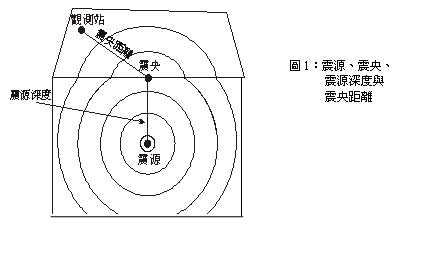
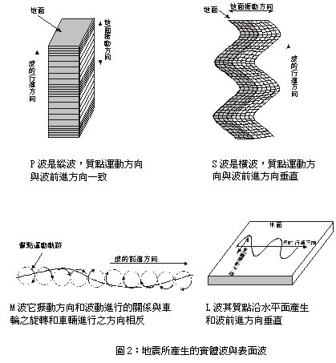
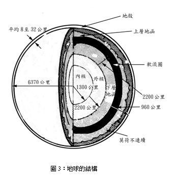
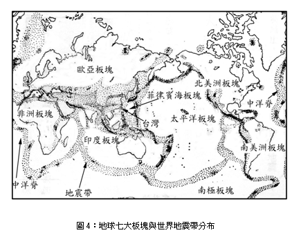
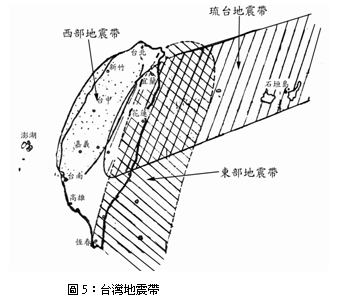
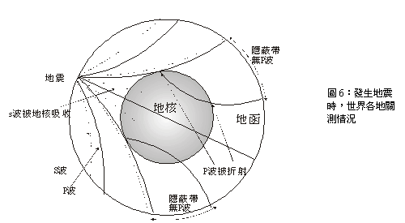
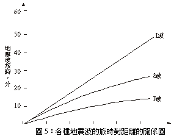

一、 前言
地震是人類的主要天然災害，當地面振動劇烈時，它可破壞房屋及其他建築物，並常使人類生命財產蒙受嚴重損失。有時在一瞬間使繁榮的都市變成廢墟，自古以來就被人類所關心。三十幾年前（1976）的大陸發生芮氏規模8.2的唐山地震，震驚全世界，死亡人數據大陸當局報導為24萬人，但外國專家估計達80萬人。最近幾年地震更加頻繁， 1995年由日本阪神首先揭開序幕，接著1999年8月土耳其發生大地震，1個月後（9月21日）發生震驚國人的集集大地震，一時之間人人談地震變色。這幾個發生地震的地區皆屬於世界的地震帶。台灣位於環太平洋地震帶上，生活在地震帶上的人更應對地震有應有的認識並具備預防地震的知識才能臨危不懼，減輕災害。
核能電廠為了避免在強烈地震時，遭受損害，造成嚴重事故，使輻射外洩危及廠內員工及附近居民，因而有其嚴格的廠址選擇與防震設計，此為核能電廠從業人員所必須認識。
註：以上是筆者2000年在台灣921集集大地震後所寫，921後世界又發生多起大地震，著名的有二，即：2004年12月26日的印度洋大地震（又稱南亞海嘯）；2008年5月12日的汶川大地震（大陸四川），附帶提起2007年7月16日，發生在日本中越沖(即柏崎刈羽核電廠附近)，發生芮氏規模6.8大地震，該該次地震對日本核能電廠的設計與運轉沖擊極大。
二、地震原因
地震以其起因的不同可區分為下列三類:
(一) 構造性（Tectonic）地震
因板塊移動或造山運動（也是板塊移動的一種，二板塊互相擠壓造成，如喜瑪拉雅山的增高）造成地表變形所引起的地震。此類地震佔全世界百分之九十以上的地震，且是大地震發生的主因。本文所要討論是此現象所引起之地震。
(二) 火山(Volcanic)地震
伴隨火山爆發所引起的地震。
(三) 地球表面受到衝擊(Impact)所引起的地震
衝擊地震之發生主要原因是地面受到擾動而產生，如表面爆炸、隕石撞擊、塌陷等皆是。
三、震央、震源與地震波
(一) 震源、震央、震源深度與震央距離
地震產生的地點叫做震源（hypocenter），由震源垂直向上與地球表面之交點叫做震央（epicenter），震源至震央之距離叫做震源深度，而震央沿地球表面至觀測站之距離叫做震央距離（如圖1）。

(二) 地震波

大部份地震因為都是沿斷層突然移位，並將過去一段時期內所累積的能量以實體波(Body Wave)（P波、S波）及表面波（L波、M波四種波）的方式將能量釋出（如圖2）。
地震時震源會產生一種彈性波，也叫實體波，此波包括縱波及橫波，及沿地球表面傳播的波叫做表面波，實體波中因縱波最先到達觀測站故叫做第一波(Primary Wave)，簡稱P波，這種波常會使人感覺到地面會上下跳動，而橫波叫做第二波(Secondary Wave)簡稱S波，它會使地面水平晃動。另外也產生表面波（surface wave），表面波亦分為雷利波(Rayleigh Wave)又稱M波和拉夫波(Love Wave) 也稱L波，拉夫波會引起緩慢的水平擺動，雷利波它振動方向和波動進行的關係與車輪之旋轉和車輛進行之方向相反，引起波浪式的前後上下搖滾運動。就破壞性而言表面波比實體波大許多。但由於地震時，三種波的傳播速度由快而慢分別為P波、S波、表面波。所以地震時首先感覺激烈上下的振動，其次水平的振動，接著緩慢的水平搖擺，最後才是緩慢的前上後下的搖滾振動。
(三)淺層與深層地震
地震震源深度沒有超700公里的，大部分震源深度都發生在70公里以下，一般將震源深度在0~30公里者稱為極淺地震，在31~70公里者稱為淺層地震，在71-300公里者稱為中層地震，超過300公里者為深層地震。淺層地震較深層地震災害較嚴重。
四、地震規模（Magnitude）與震度(Intensity)
(一) 地震規模
1. 芮氏規模
地震規模是指地震時所釋放的能量多寡。地震學家所採用的方法是I935年由芮克特(Richter)教授所提出，稱為芮氏規模。其定義為：在一標準扭力式之伍德安德森(Wood Anderson)地震儀於距離震央100公里處所紀錄的最大振幅(以微米表示 )之對數值。芮氏對美國加州 200-1500公里之淺地震研究結果，發現芮氏規模與伍氏地震儀之最大振幅之經驗公式為:
M = log A - log Ao
式中 M : 規模
A : 某次地震在觀測站用伍氏地震儀量到之最大振幅(單位為微米 )
Ao : 標準地震在同觀測站用伍氏地震儀量到之最大振幅(單位為微米)
對台灣近地地震之規模計算公式，徐明同博士推算為：
M=log A 十1.09 log Δ十0.5
式中 A=水平分量最大振幅合成值(單位微米)
Δ= 震央距離(單位公里)
因此，從上述之敘述可知目前若有人報導「芮氏地震儀xx級」，實在是錯誤，因芮氏並無製造地震儀且規模是以整數及整數後面第一位數字小數點表示，同時"級"是指震度（Intensity）而非指規模（Magnitude）。因此921集集地震的報導應為： 9月21日凌晨1點，台灣發生芮氏規模7.3地震。
2.芮氏規模與地震釋放能量
以地震波釋放出來的能量 （單位：爾格）和芮氏規模之間，據加坦柏格（Gutenberg）表示它們彼此之間有下列關係：
log EM = 11.8 + 1.5 M…………………………（1）
EM是規模M時的地震釋出能量。
由（1）得log EN = 11.8 + 1.5 N…………………（2）
EN是規模N時的地震釋出能量
（2）-（1）得： log（EN / EM）=1.5（N - M），
即：
EN / EM = 101.5（N - M）……………（3）
由式（3）可知規模每增加0.2，能量增加一倍；規模每增加0.69，能量增加十倍；規模每增加1，能量增加三十倍；規模8是規模6能量的一千倍；如以核能電廠發電量計算，一個規模8.5的強烈地震需要核四廠兩部機全功率運轉四至五年，原子彈的威力非常強大，實驗證明一個相當兩萬噸黃色炸藥的中級原子彈（8x1020爾格）在堅硬花崗岩中爆炸，所得結果和規模6的地震相當（6.3x1020爾格），因此如果是發生規模8的地震，相當於投下一千顆的原子彈。
地震之大小若以規模區分則M<3者稱為微地震，3≦M<5者稱為小地震，5≦ M<7者稱為中地震，M比7大者稱為大地震，從過去發生之地震規模與每年發展的頻率，可得下述分佈情形：
1. M在9以上的超強激烈地震：
自芮氏地震規模被採用以後，9.5以上的地震從未發生過，其實連世界上是否曾經發生過9以上的地震，目前仍在爭論中。因為歷史上公認最大的地震，它發生在1960年智利，其規模最高有人測到9.5，但也有人認為只是8.9，該次地震無疑極為強烈，因為在短短一天半內規模8以上的地震至少發生3次以上，地面形狀的扭曲和海嘯的巨大，也是世界上罕見的。縱使如此，從1935年芮氏規模被採用後也只有1960年智利的9.5，1964年阿拉斯加的9.2，以及1952莫斯科的9.0被測到超過規模9的地震。
2. M在 8.5~8.9之極大地震：
全世界約每10年一次。
3. M在 8~8.4之強大地震：
如震央在陸上會造成大災害，如震央在海底會引大海嘯，全世界每年平均一次。
4. M在 7~7.9之大地震：
如震央在陸上曾造成大災害，如震央在海底會引起海嘯，全世界每年平均廿次。
5. M在 6~6.9之地震：
如震央在陸上會造成災害，且世界上任何主要測站皆可測得，每年平均大約是 150次。
6.M在 5~5.9之地震：
有感區域相當大，震央附近會造成災害，年約800次。
7.M在 4~4.9之地震：
屬有感地震，但不發生災害，年約 6200次。
8.M在 3~3.9之地震：
距離震央較近的人可感覺到，每年約 49000次。
9. M在 2~2.9之地震：
在震央附近的人亦可能無感覺，但測站可測到，每年約30萬次以上。
10.M在1~1.9之地震，使用高倍率地震儀可測到。
11．M在1以下之地震，設在適當地點之高倍率地震儀可測到。
(二)震度和級數:
震度是表示地面振動程度，一般與加速度有關，地震學家喜歡用級數或gal (1gal=1cm/sec2 )來表示，震度愈大，地面上所感受到的振動愈激烈，設備及建築物所遭受破壞程度也愈大，一般距離震央愈近，震度愈大，破壞力亦愈強，震度級數以正整數表示之，表I是世界各國所採行地震震度分級比較表。
從表上可知台灣震度級數系沿用日據時代之分類，分為 0~6級，第6級大於250gal，而日本後來又將6級分為6、7兩級，歐美國家多數採用修正之麥卡里震度階，其將震度分為12級，以大寫羅馬數字表示。1963年 Medvedev、Sponheup、Karnik 三人共同提倡的MSK震度階級，因其較能表示定量精神，故為聯教組織(UNESCO)所採用。
（三）地震規模及震度關係
一般人常將規模與震度混淆，所謂規模是表示地震時釋放能量之大小，在地震發生時規模只一個值，且不隨地震測站而改變，但震度會隨地震測站與震央距離而改變，地震規模愈大，則釋放能量愈大，震度也愈大，引起災害也愈大。當然要摧毀一座建築物，最關心的是此建築物所能承受之最大震度，但是只知道芮氏地震規模並無法推算該建築物所承受的震度，必須充分了解震央位置，震源深度，地震波傳播時之地質特性及該建築物結構等才能推算震度與耐震程度，一般而言，同一地區地震規模愈大，距離震央愈近之淺層地震其震度愈大。
|
震度
|
名稱
|
震動程度
|
台灣現有震度階
|
日本震度階（1949）
|
新MERCALLI震度階（1956）
|
CANCANI震度階（1903）
|
MSK 震度階（1964）
|
|
0
|
無感
|
地震儀有記錄，人體無感覺。
|
0
0.8gal以下
|
0
0.8gal以下
|
0
0.5 gal以下
I
0.5gal至1.0 gal
II
1.0gal至2.1 gal
|
I
0.25 gal以下
|
I
0.8 gal以下
|
|
II
0.25gal至0.5 gal
|
|
III
0.5gal至1 gal
|
II
0.8gal至2.1 gal
|
|
1
|
微震
|
人靜止時或對地震敏感者可感覺到。
|
I
0.8gal至
2.5 gal
|
I
0.8gal至
2.5 gal
|
IV
1gal至2.5 gal
|
|
2
|
輕震
|
門窗輕微搖動，一般人皆可感覺。
|
II
2.5 gal至
8.0gal
|
II
2.5 gal至
8.0gal
|
III
2.1gal至5.0 gal
IV
5.0gal至10 gal
V
10gal至21 gal
|
V
1ga2.5至5 gal
VI
5.0gal至10 gal
VII
10gal至25 gal
|
III
2.1gal至5.0 gal
IV
5.0gal至12 gal
V
12gal至25 gal
|
|
3
|
弱震
|
房屋搖動，懸物搖擺，盛水動盪。
|
III
8.0 gal至
25.0 gal
|
III
8.0 gal至
25.0 gal
|
|
|
4
|
中震
|
房屋搖動激烈，不穩物傾倒，盛水達容器八分滿者會濺出。
|
IV
25 gal至
80 gal
|
IV
25 gal至
80 gal
|
VI
21gal至44 gal
VII
44gal至94 gal
VIII
94gal至202gal
IX、X、XI
202gal至432gal
XII
432gal以上
|
VIII
25gal至50gal
|
VI
25gal至50 gal
VII
50gal至100 gal
|
|
IX
50gal至100 gal
|
|
5
|
強震
|
強壁龜裂，牌樓煙囪傾倒。
|
V
80 gal至
250 gal
|
V
80 gal至
250 gal
|
X
100gal至250gal
|
VIII
100gal至200gal
IX
200gal至400ga
|
|
XI
250gal至500gal
XI
500gal至1000gal
|
|
6
|
烈震
|
房屋傾塌，山崩地裂，地層斷陷。
|
VI
250 gal以上
|
VI
250 gal至
400 gal
|
X、XI
400gal至 800gaL
XII
800 gal以上
|
|
VII
400 gal以上
|
五、板塊構造說與地震帶分布
（一） 地球結構

圖3，地球半徑約6800公里，它的中心有一個地核（core），主要是由鐵組成，另有一小部分鎳，半徑為3500公里，地核分內、外兩層，內核（inner core）半徑為1300公里是固體，外核半徑為2200公里，因為S波不能穿過，證明它是液體（因為S波只能由固體傳送），地函（mantle）位於地核與地殼之間，厚2900公里，向上以莫荷不連續（Mohorovovicic Discontinuity）與地殼分界，一般推測是
由固體形成，地函亦分內、外兩層，由內往外依序分為下部地函、軟流圈、上部地函，上部地函是橄欖岩屬於岩石圈（lithosphere），岩石圈是包括上部地函與地殼的物質，軟流圈位於上部與下部地函之間，由於受到地下深處熱力與壓力的關係，質地顯得較軟，與瀝青相似，根據推測岩漿很可能在此形成，下部地函的物質因缺乏證據，無法得知，只能推算是比重5.7的固體。地殼是地球最外層，它的厚度在海洋和陸地各不同，在海洋地區較薄只有5至10公里，平均為8公里，陸地地區較厚，大約16至90公里，平均為32公里。一般而言，地殼亦分上、下兩曾，上層為矽鋁層，下層為矽鎂層，矽鋁層由淺色質輕的岩石所組成，物理性質與花崗岩類似，矽鎂層由深色質重的岩石所組成，物理性質與玄武岩類似。海洋地殼是由玄武岩組成，大陸地殼上層由花崗岩組成，下層由玄武岩組成。
(二)板塊構造學說
I．世界地震帶之分佈

構成地球表面岩石圈（包括地殼和上部地函）的板塊究竟有多少塊呢？目前我們知道的有：（1）太平洋板塊；（2）歐亞板塊；（3）印度板塊；（4）南美板塊；（5）北美板塊；（6）非洲板塊；（7）南極板塊，共有七大板塊（如圖4）。也有人將北美板塊和南美板塊併為一塊稱為美洲板塊，因此認為有六大板塊。這些板塊可以再細分成若干較小的板塊。各板塊的厚度平均為100公里，由於岩石圈均飄浮在高溫且可塑性較高的軟流圈上，且高溫岩漿不斷由軟流圈向地表噴出，造成各板塊每年大約以2公分至13公分作相對運動，因此在板塊邊緣，會因互相撞擊形成山脈、海溝、和島弧等，地震之產生係因板塊邊緣的互相撞擊或錯動所造成。
由上述所知，地震並非處處都會發生而是集中在少數幾個板塊邊緣接觸的地震帶，在世界上有三個主地震帶（參考圖3），即環太乎洋地震帶，歐亞地震帶及中洋脊地震帶。環太乎洋地震帶包括環繞太平洋四週的大陸邊緣及島弧，約佔世界68%之地震，歐亞地震帶從地中海北岸開始經土耳其、伊朗、巴基斯坦、印度北方直至中國青康藏高原，華北地區，約佔世界21%x地為，中洋脊地度包括大西洋、印度洋、北極海之洋脊、海嶺，佔世界11%地震。
3．台灣地震帶之分佈

台灣位於歐亞板塊與菲律賓海板塊的碰撞地方，事實上台灣就是這兩個板塊的碰撞，才造成它從海洋中隆起。一般而言，台灣地震帶可分為三支，如圖5所示，即西部地震帶、東部地震帶及琉台地震帶，西部地震帶起自台北附近向南南西延伸止於台南附近，東部地震帶自宜蘭東北方海底向南南西延伸到恆春半島東方，然後經巴士海峽連呂宋島，琉台地震帶從琉球列島向西南延伸至台灣中部。
（二） 為什麼台灣一發生地震國外馬上知道？
1. 台灣發生地震時許多地方都可測到：

台灣發生地震時許多地方都可測到，如圖6所示，液態核心是決定S波和P波是否到達的關鍵，因為S波不能穿過液體，所以根本不能通過地核（地核外層是液體）。P波則以通過地函不同的速度穿越地核。但卻被折射而改變P波的方向，。結果地球周圍產生一層隱蔽帶，這裏沒有P波，S波不見的區域更大，因為在地核中它被吸收了，(P波和S波的速度隨深度而改變，由於折射的關係使路徑彎曲，P波的方向在地核與地函交界處則有顯著的改變)。事實上，震央超過大約110000公里從來沒有偵測到S波 (沿地面量)。到了這樣的距離P被也消失了，但超過約I6000公里P卻又重新出現了。

2. 一個測站只能測知震源的距離：
由於一次地震所發出來的各種波，速率都不一樣，因此從震源到地面上某特定位置所需時間也不一樣。在一地震站，將每一種波到達的時期差與已知各種波的旅時對距離的資料，根據所獲得的時差，即可找出距離。例如：根據圖5，若一測站，測得P波後，7分鐘後又測到S波，又過9分鐘測到L波，則可肯定震源與測站距離6000公里。
3. 三個測站才能真正測知震源的位置
一個測站只能測知震源的距離，也就是說在一球面上以測站為圓心並以此距離作為半徑繪一圓圈，震源在圓圈上某處。因此兩個測站可繪兩個圓圈，可是有兩個交點，仍然不之震源落在那一點。必需由第三圈來決定震源為那一點。所以要想決定一次地震的震源必須有三個地震站紀錄。
六、地震預測、災害、防範與災害處理
（一）地震的預測
地震預報目前已成為地球科學者們所關心的題材。那麼到底怎樣才叫地震預測?凡是在一次地震未發生之前，能夠明確地指出地震發笙的地點，地震發生的時間，以及地震的規模、震度等，這就是地震預測。因此假如有人說:「三天後太平洋東岸將會發生地震。」它可信嗎?它能算是地震預報嗎?當然的，定是可信的，不過它卻不能算是地震預報。因為這種預報沒有明白的表示地震的規模、震度及震央的確實地點，這種預測是無意義的。不能算是地震預報。而世界各地每天都不斷約有大、小地震發生，有些是吾人無法感覺的「無感地震」。因此太平洋東岸若連無感地震計算在內，可以說幾乎天天都有地震了。
目前各國學者對地震發生的時間、地點和規模的預報能力仍然十分有限。能做到準確的地震預報似乎仍不可能，不過對於地震預報的方法已有相當的發展，若假以時日地震預報將如氣象預報變為可能的。
茲簡要介紹數種地震預報的方法，如下:
1. 地震發生的週期:
地球內部需有引發地震的能源才會產生大地震。因此如果某一地區之地震能源累積的速度固定的話，則可計算出地震的週期。假若某地很容易集中地震能源，而已長時間無地震發生，那麼就必須格外注意，因為這地區之地下已經積蓄大量的地震能源。隨時均有地震發生之可能了。
2．行星之排列:
太陽系中之行星每隔179年便會出現在太陽之同一邊，這種天文現象稱為「木星效應」。這種排列會使這些行星一起對太陽產生引力作用。太陽受 了這些引力作用，它的磁力活動將會增加，太陽黑子的巨大風暴和日焰也會產生。地球上空的大氣層因此會受到影響，氣候類型也會跟著改變。這種現象對於地球的自轉有制動作用，就會產生震動現象。
3．測地法:
在大地震發生的前後，震央附近的地殼常有變動，如:變形、傾斜、地裂或升降等現象，因此經常使用靈敏度很高的儀器從事土地測量工作，對大地進行長時間的監視，若發現地殼有變動，則可能發生地震。
4．地下水或井水的氡含量增加:
蘇俄的科學家發現到水井中的含氡量於地震前會增加，故可用以預測地震。當岩石受到強大壓力時，常可使地下水位突然提升，但當岩層產生了小裂隙後。地下水開始滲入裂隙中，補滿裂開之空隙，於是地下水暴露的表面積增加，乃接觸到較多的放射性物質，同時吸收更多量的氨。直到地震發生，岩石突然崩裂。氨約含量又逐漸下降。可見分析井水含氡量變化也可幫助地震的預測。
5. 動物的異常:
長久以來，許多故事都曾談到，地震來襲前，動物會表現出一些怪異的行徑，如青蛙會跳出池塘;鹿會跑到空曠地區;深海魚類由深海進入淺海;大群海鳥會飛到大陸極內地去。現在科學家們正在努力研究，是不是某些動物能查覺牠們周遭的環境正發生變化?也許牠們對低頻率的震動比較敏感，或許牠們能夠嗅到從地底中心移動的岩塊申所擠壓出來的瓦斯味道等。目前，我們尚無法確知動物是否能告訴我們地震發生的確實地點和時間，以及牠們以何種方法感覺出異樣，但是在可預測的將來，也許牠們可以幫助人類解決這些問題。
6．潮位檢驗:
潮汐變化，若在無風暴、颱風或遠地地震引起長浪的影響，一般甚為規則。在大地震發生前後，住在海邊一帶的人，往往會發現海岸線或島嶼的急烈上升或下降現象。因高潮時海水對地殼之壓力加大，低潮時則較低，無論高或低於平均壓力，均易發生地霞。
7.震波速度之變化:
由地震波速度的變化也可以預測地震之發生。因為地殼如果受到強大應力時。經過此區的地震波速度可能會發生變化。如果變化持續愈久。即將發生的地震可能愈強烈。
8.活動斷層及褶曲：
據統計一些大地震過後。往往發現地層斷裂或褶曲，因此一般地質學家相信在活動斷層帶或較大規模的褶曲運動帶都易發生地震，如在美國加州斷層帶，地震活動十分頻繁。
9. 少天然氣含量的分析:
在天然沼氣豐富的地區，地震發生前沼氣的含量會增加，在強烈地震過後，沼氣又會減少，餘震發生時沼氣含量也會增加。所以分折天然氣的含量也有助於地震預測
I0．地電與地震：
地下平常就有地下電流，地震前幾小時。地下電流常會發生異常現象。地殼中岩石之物理或化學變化，會影響地電之變化。此種電流在地震前數小時開始產生，以警告我們要發生大地震了。
11.地磁與地震:
地震學上已知地下岩石改變溫度時，其磁性會發生變化。這種變化可利用來預報地震。磁力之忽然改變，大約開始於大地震發生之一年半以前，其中有的持續時間長達一年以上，但常在大地震發生前二個月左右恢復正常。所以若磁力產生異常，可視為一年半後可能發生大地震之警告，而磁力恢復正常時，則指示可能二個月後發生大地震。
12.其他：
除了以上這些地震預報法外，其他像是重力、氣象、地鳴及發光、人工爆破…等方法也均可利用來預測地震，目前世界上諸先進國家及處於地震帶的國家，如:日本、美國、蘇俄等對於地震預測之研究均不遺餘力，我們期待對地震能獲得更多的了解。俾將能準確的做地震預測，減少地震帶來的災害。
（三） 地震的災害
地震發生時，可能帶來許多嚴重的災害。一般可分為直接性災害與間接性災害兩種。
1.直接性災害
（1） 地面斷裂:
當斷層活動沿著斷層的兩側發生數公分到數公尺的錯動時，就會造成地面破裂、地盤拱起或陷落的情況，地表也會出現規模不一的斷裂。如果建築物的基礎正好跨越斷層帶，那就難免被撕扯，發生扭曲或斷裂，使得建築物倒塌。
（2）山崩:
斷層活動時造成的激烈振動會使鄰近斷層的地區發生大量的山崩，造成災害。
（3）岩層液化:
地震發生時，強烈的震動會使原本吸附在岩層申的水滲出，使岩層「液化」而變得軟弱，建築物的地基因此失去支撐，容易使建築物產生下沈、傾斜或倒塌的情況。
（4）地陷:
發生地陷會損壞一個都會區的溝渠、地下水道、河流兩岸的堤防等，甚至導致海水倒灌，對都會區造成致命的影響。
（5）海嘯:
如果斷層造成海底的地形變化，則會攪動海水而形成較長的波浪，並向四周傳布。地農在大洋所引起的起伏波浪，通常高達數公尺甚至更高，當波浪傳到海岸時，因海水變淺而使波浪變得更高，此即為海嘯。台灣地區於1867年12月I8日，因北部大地震產生大海嘯，該日有I5次連續地震，雞籠頭，金山里沿海山傾、地裂，全島震動，基隆全市房屋倒壞。死者數百人，基隆港水向外海流出，港內海底露出，瞬間巨浪捲進。船隻被衝上市內，釀成大災害，處處發生地裂，山腹大龜裂，噴湧泉水。淡水也有地裂及海嘯，數百人被淹死，家屋倒壞，是台灣遭受到海嘯侵襲之最大紀錄。
2、間接性災害
（1）火災:
地霞時劇烈的地動將會直接破壞如水管、瓦斯管及電線等，外洩的瓦斯若碰上電線走火或其它燃燒的火苗便會引起火災。此時由於大部分的水管已被震裂而斷水，在無法搶救的情形下便會形成不可收拾的大火。
（2）水壩破壞:
地震時水壩可能因為水庫申大量水體的劇烈震動、發的洪水可能封水庫下游居民帶來比地震本身更巨大的傷害。
（3）建築物傾毀:
如房屋倒塌、橋梁斷裂、道路坍方等災害導致人員與財物損失。
（四） 地震防範：
1.地震前
（1）一般民眾
（a）居家
平常在家裏應備有乾電池收音機及手電筒及急救藥箱，並使每個家人都知道這些東西所儲放的地方，了解急救方法。
知道家裏瓦斯、自來水以及電源安全開關的位置，並使家裏每一個人知道如何關閉。
重物不要置於高架上，將笨重家具栓牢。
演練或模擬地震時逃生方法。
每隔一段時間對自己房屋事前檢修和固牢，以防地震突然襲擊。
（b）.學校
教員(尤其是中、小學校)應經常在課堂，提示學生如何避難 或實際演練。
（c）辦公室及工作場所:
辦公室或工作場所應有地震時緊急計劃，了解緊急情況時各人的任務以及應採取何種行動。
（2）公家團體
針對地震發生的各種直接或間接傷害，擬定一套緊急防範措施，例如規畫地震時如何動員及組織人力，並事先選好地震時人們應疏散的路線和場所，才能做到臨震不亂，沉看應付。對於一 些大型水庫和油庫以及一些易燃、易爆、劇毒物品的生產和儲存設備，應該組織人員進行嚴格檢查，發現不安全的因素，要及時進行加固或採取其他適當的防震措施。對於一般建築物，也應組織人員及時檢查，加以維修。這樣就可以避免和減少由於地震而引起的次生災害和由於建築物的倒塌而引起的人員傷亡。
2. 地震時:
（1） 一般民眾
（a）在室內：
要迅速關閉瓦斯，撲滅爐火，拉開總開關或電閘，切斷電源以防引超火災。如果萬一來及離開房屋跑出屋外，或在高層樓者，或由於地震已經發生，門窗一經震動，扭了起來，打不開時，請躲在堅固家具下，和床舖和桌子下面暫避一下或靠建築物棟樑大柱下，或站立於走道口，切勿靠近窗戶或站於外門口，以防玻璃震破，隧物擊傷，千萬不要慌慌張張急著跑到室外。如聽到疏散時，使用樓梯較使用電梯安全。如在室外，請待在室外，許多傷害的發生是地震時人們逃離或闖進建築物所致。
（b）在室外：
請站於空曠處，頭頂有電線或有任何可掉落物品的地方〈建築物的看板、飛簷等〉應遠離之。
（c）在室內、外不要使用蠟燭、火柴或其他的明火。以免瓦斯洩漏時發生爆炸。
（d）公共場所：
地震發生後，要做到臨震不亂，聽從指導。要按照指定的路線散到事先選定的較空曠的安全地區，特別是在公共場所、車間、劇院、電影院、商場、課堂內的人員更不要緊張慌亂，你擁我擠，要有組織、有秩序地儘快離開房屋。疏散時，不要逗留在狹窄的小巷裡;不要站在高大建築物、煙囪、高圍牆、以及懸崖陡壁，甚至大樹的旁邊;不要站在靠近河流、水渠兩岸太近的地方;也不要站在高壓電線、變壓器的附近，以防電桿、電線震斷。觸電傷人。
（e）如在行駛中車輛，勿緊急煞車，注意前往後左右所發生的情況，減低車速，將車靠邊停放。並留在車內直至地震停止。在辦公室及工作場所藏身於辦公桌或堅固的家具下，遠離窗戶。以免玻璃震破時被刺傷。
（f）在學校:
避於桌下，背窗戶。
如在操場，遠離建築物。
如在行駛中之校車，留在座上勿動直至車輛停妥。
（g）在辦公室及工作場：
所藏身於辦公桌或堅固的家具下，遠離窗戶。以免玻璃震破時被刺傷。
（2）公家團體
按平時的編寫及演的地震時緊急防範措施，組織人力，動手實施。
3.地震後
查看周圍的人是否受傷，如有必要，予以急救。檢查水、電、瓦斯管線有無損害，如發現瓦斯管線有損，將所有門、窗打開，立即離開並向有關權責單位報告。 打開收音機，收聽緊急情況指示，勿急著使用電話，因此時電話需作較優先的通信之用。
＊檢查下水管道有無故障。
＊請離開受損之建築物。
＊儘可能穿高統皮靴，以防震碎的玻璃及碎物弄傷。
＊接近煙囪時或其他高細建物及招牌，應特別留心以防倒塌或掉 落。
＊在學校、辦公室及工作場所應聽從緊急計畫人員的指示。
＊遠離海灘、港口附近地區以防海嘯之侵襲，即使地震後相隔一段時間亦應小心。
＊地震發生而造成災害之地區，除非特准或有任務，否則不應進入。以免防礙別人救災，並嚴防歹徒趁機掠奪。
＊注意餘震之發生，可能導致另外的災害。